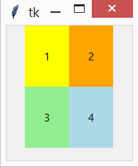
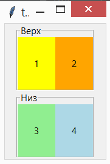
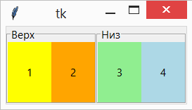
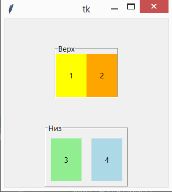

Ghdklsaj;lkjds;fpau[ poa „psifa’ds
10. Tkinter. Сложное позиционирование¶
Для сложных интерфейсов используют отдельные области позиционирования элементов.
10.1. Рамка - Frame()¶
Фрейм - вспомогательный виджет, создание которого происходит при помощи класса Frame().
Фреймы размещают на главном окне, а уже в фреймах – виджеты:
from tkinter import *
root = Tk()
f_top = Frame(root) # root можно не указывать
f_bot = Frame(root)
l1 = Label(f_top, width=7, height=4, bg='yellow', text="1")
l2 = Label(f_top, width=7, height=4, bg='orange', text="2")
l3 = Label(f_bot, width=7, height=4, bg='lightgreen', text="3")
l4 = Label(f_bot, width=7, height=4, bg='lightblue', text="4")
f_top.pack()
f_bot.pack()
l1.pack(side=LEFT)
l2.pack(side=LEFT)
l3.pack(side=LEFT)
l4.pack(side=LEFT)
root.mainloop()
Результат выполнения:
Кроме Frame существует похожий класс LabelFrame – фрейм с подписью. В отличие от простого фрейма у него есть свойство text:
from tkinter import *
root = Tk()
f_top = LabelFrame(root)
f_bot = LabelFrame(root)
f_top = LabelFrame(text="Верх")
f_bot = LabelFrame(text="Низ")
l1 = Label(f_top, width=7, height=4, bg='yellow', text="1")
l2 = Label(f_top, width=7, height=4, bg='orange', text="2")
l3 = Label(f_bot, width=7, height=4, bg='lightgreen', text="3")
l4 = Label(f_bot, width=7, height=4, bg='lightblue', text="4")
f_top.pack()
f_bot.pack()
l1.pack(side=LEFT)
l2.pack(side=LEFT)
l3.pack(side=LEFT)
l4.pack(side=LEFT)
root.mainloop()
Результат выполнения:
Как и для обычных виджетов, задавая параметры pack() можно изменять положения фреймов. внеся изменения в наш код, мы получим левостороннее расположение фреймов:
f_top.pack(side=LEFT)
f_bot.pack(side=LEFT)
Результат выполнения:
Кроме side у pack() есть другие параметры-свойства. Можно задавать внутренние (ipadx и ipady) и внешние (padx и pady) отступы:
f_top.pack(padx=100, pady=50)
f_bot.pack(ipadx=10, ipady=10)
В результате верхний фрейм отступает от всех ближайших элементов на заданное расстояние, область отступа обведена красной рамкой. В нижнем фрейме появились отступы элементов от рамки:
Когда устанавливаются внутренние отступы, то из-за того, что side прибивает виджет к левой границе, справа получаем отступ в 20 пикселей, а слева – ничего. Можно частично решить проблему, заменив внутренние отступы рамки на внешние отступы у меток. Изменим код следующим образом:
f_bot.pack()
l3.pack(side=LEFT, padx=10, pady=10)
l4.pack(side=LEFT, padx=10, pady=10)
Результат выполнения:
Но тут появляется промежуток между самими метками. Чтобы его убрать, пришлось бы каждый виджет укладывать в свой собственный фрейм. Отсюда делаем вывод, что упаковщик Tkinter удобен только для относительно простых интерфейсов.
10.1.1. Упражнения¶
Ниже приведен код часов:
from tkinter import *
import time
def tick():
# get the current local time from the PC
time2 = time.strftime('%H:%M:%S')
# if time string has changed, update it
clock.config(text=time2)
# calls itself every 200 milliseconds to update the time
# display as needed could use >200 ms
clock.after(200, tick)
root = Tk()
clock = Label(root, font=('times', 20, 'bold'), bg='green')
clock.pack(fill=BOTH, expand=1)
tick()
root.mainloop()
- Напишите данную программу и внесите изменения в цвета программы и т.п..
- Добавьте фрэйм с подписью часового пояса.
- Добавьте ещё пару фреймов с часами с справа и с лева.
- Для созданных часов: измените названия часовых поясов и их время.